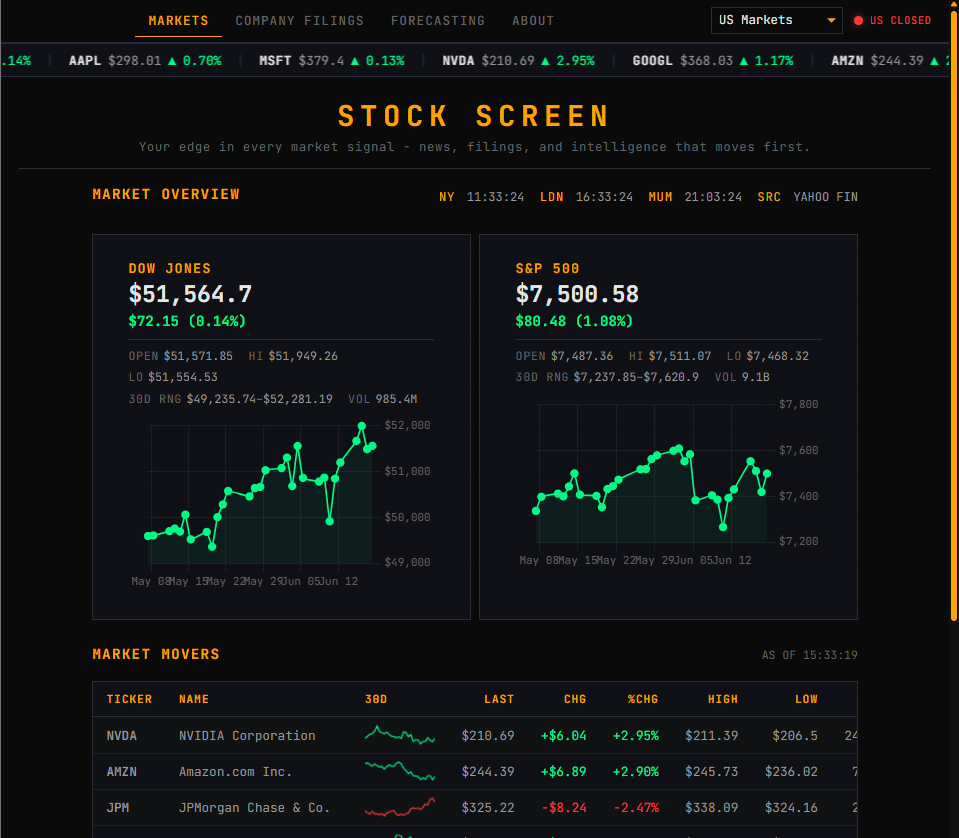
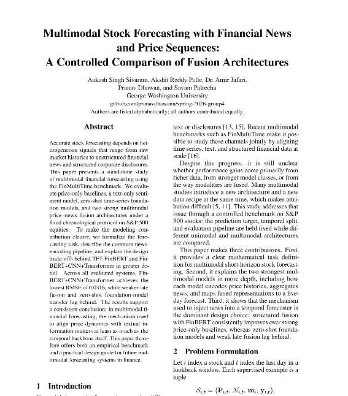
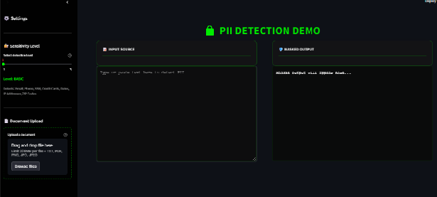
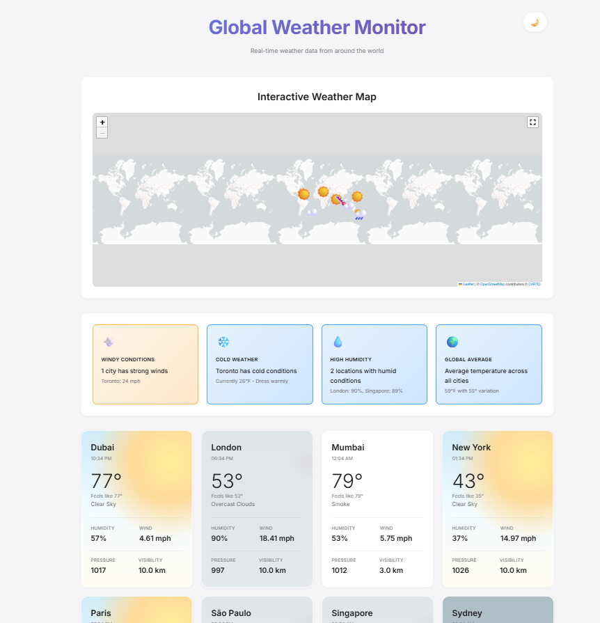

AEROSPACE · NEW DELHI
Aevantis Aerospace
Production marketing site for an unmanned-systems manufacturer, presenting product lines, capabilities, and an enquiry flow.
I maintain the site’s content, hosting, and performance.
Visit siteMS completed May 2026 · Seeking full-time AI/ML engineering roles
AI engineer focused on production automation: ~70% of monthly service-desk tickets automated, 98.1% F1 across 54 PII entity types, and ML pipelines for 10,000+ documents.

I’m an AI Engineer and Data Scientist working on production systems and model pipelines. I hold a Master’s in Data Science from George Washington University and a Bachelor’s in Computer Science and Engineering. My experience spans computer vision, natural language processing (NLP), and analytics, with a focus on transforming messy data into reliable, scalable solutions.
I’ve recently been working on AI agents, context compression, and workflow automation. I’m drawn to problems that involve navigating ambiguity, optimizing under constraints, and building systems people actually use.
Always open to connecting with others working on interesting problems so feel free to reach out.

A real-time AI-powered terminal that unifies stock analysis, market news, company filings, forecasting workflows, and market context into a single interface. Designed for investors, it helps compare signals quickly and turn live market data into actionable research.

Conducted a benchmark study on the FinMultiTime dataset using multiple data modalities, evaluating 10+ different model architectures and ensembles delivered findings in a published research paper and technical report.

Achieved 98.1% F1-score and 97.9% recall across 54 PII entity types by architecting and benchmarking 4 transformer architectures, selecting DeBERTa as the production model and deploying via ONNX for <100ms inference.

Built a fully serverless ETL pipeline on AWS using Lambda and EventBridge to ingest and transform real-time weather data from the OpenWeather API on a scheduled cadence, with results surfaced through an interactive dashboard.
GPA: 3.74/4.0
GPA: 8.51/10.0
Alongside my ML work, I design, ship, and maintain production websites for businesses — the same ownership and operating discipline I bring to AI systems.
AEROSPACE · NEW DELHI
Production marketing site for an unmanned-systems manufacturer, presenting product lines, capabilities, and an enquiry flow.
I maintain the site’s content, hosting, and performance.
Visit siteOUTDOOR ADVERTISING · DELHI NCR
Production site for an outdoor-advertising company, with media-location information, project galleries, and lead capture.
I maintain the site’s content, hosting, and performance.
Visit site